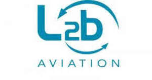

Trade Mark Journal No.2025/035 29 August 2025
UK00004251436 19 August 2025 (35,45)

- Class 35
- Arranging of commercial and business contacts; arranging business introductions; business introduction services, namely providing a referral system in which professionals are introduced to each other; service to assist in establishing a network of business contacts; business networking services; online business networking services; professional networking services; professional referral services; providing an on-line directory of professionals; providing information via an online searchable database featuring business opportunities and business and professional queries and answers about businesses and business opportunities; providing business information about and making referrals concerning businesses, professionals, products, services, events and activities; database management for providing business information and facilitating the sharing of business information intended to enhance opportunities for business; compilation and systemization of information into computer databases; business intermediary services allowing connections and exchanges between a variety of businesses and start-up companies; commercial information agency services; business promotion and/or intermediary services for facilitating the exchange and sale of services and products of third parties via computer and communication networks; advertising, marketing and promotion services for businesses; arranging of contractual services with third parties; operating an electronic marketplace for businesses; business development services; business information; business advice, assistance, consultancy, analysis, formation, management and administration; business information services provided online from a global computer network or the internet; arranging transactions and commercial contracts; business intermediary and advisory services in the field of selling products and rendering services; economic forecasting.
- Class 45
- Provision of legal services; professional, advisory, licensing and consultation services; legal research services; legal information services; legal support services; legal consultancy services; legal watching services; legal advocacy services; due diligence services; social networking services; online social networking services, allowing registered users to share information and engage in communication and collaboration between and among themselves, to form groups and to engage in social networking; provision of information, consultancy and advisory services relating to all the aforesaid services.
L2B Aviation Limited
Representative: Venner Shipley LLP